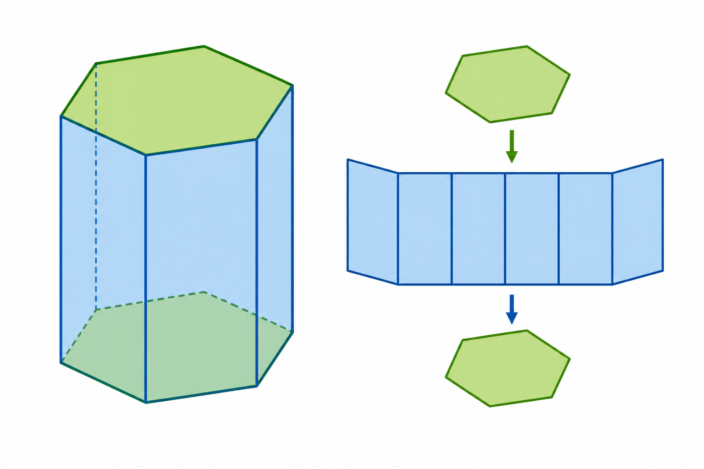

1
ostrosłup
піраміда

📘 Co to jest? Що це?
Ostrosłup ma wielokątną podstawę i ściany zbiegające się w wierzchołku.
Піраміда має многокутну основу і грані, що сходяться у вершині.
⭐ Zapamiętaj Запам'ятай
podstawa + wierzchołek
V = ⅓·P_осн·H
⚠ Nie pomyl Не плутай
- podstawa + wierzchołekgraniastosłup
- V = ⅓·P·Hwalec
✅ Przykłady Приклади
- podstawa + ściany boczne
- wierzchołek W
- ostrosłup czworokątny
- V = ⅓·P_p·h
- siatka ostrosłupa